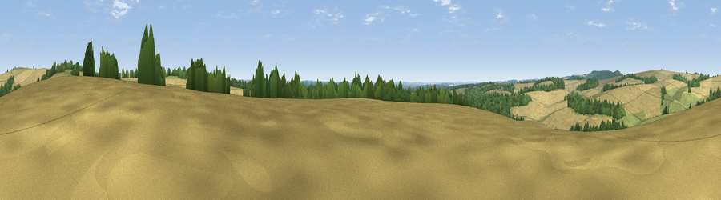

Viewpoint near Old Burghclere
#34246 in England · top 40% of its area beats it · near Old Burghclere · access?Where it is
The exact computed spot (SU 49125 54675). Click the marker for map links.
Public access: no public right of way or access land is recorded at this exact spot — it may be on private land. Computed from Natural England's CRoW access layer and OpenStreetMap rights of way — not the legal definitive map. Always verify locally.
The view, rendered

A 360° render of this exact spot computed from the terrain model, tree cover and land cover — summer colours, afternoon light, calibrated against photographs of famous viewpoints. Real trees, hedges and buildings will differ in detail.
The panorama
Grey silhouette: terrain skyline in each direction (720 bearings, Earth curvature and refraction included). Dashed green: skyline with trees (+15 m) and buildings (+8 m) as obstacles. Blue strip: how far the ground is visible on each bearing.
Where the view opens
Wedge length = distance to the farthest visible ground on that bearing (vegetation-aware). Rings at 10, 25 and 50 km.
What fills the view
63% cropland · 20% grassland · 17% woodland
Angular shares of the visible panorama (visual magnitude), not map area. Landscape diversity 0.40 (0–1 Shannon).
Key numbers
More beautiful places nearby
The staircase of upgrades: each row has a higher view potential than everything closer. Driving times are estimates from straight-line distance, calibrated against real road routing — check an actual route before setting out.
| Place | Direction | Drive | Score |
|---|---|---|---|
| Viewpoint near Old Burghclere | W · 2 km | ~5 min | 40.2 |
| Watership Down | N · 2 km | ~6 min | 71.4 |
| Beacon Hill | NW · 4 km | ~10 min | 76.7 |
| Martinsell viewpoint | WNW · 32 km | ~50 min | 76.9 |
| Viewpoint near Buriton | SSE · 41 km | ~61 min | 80.0 |
| Beacon Hill | SE · 48 km | ~69 min | 85.8 |
| Mottistone Down | S · 71 km | ~94 min | 87.2 |
| Viewpoint near St. Lawrence | S · 77 km | ~101 min | 88.2 |
51.28910, -1.29692 · source: screening · position refined by local search. Computed location — check access rights before visiting.